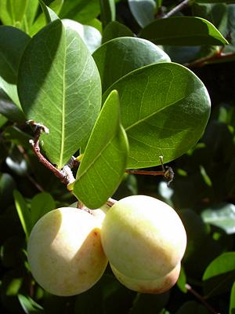
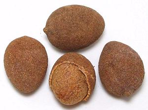

Coco Plum / Gbafilo

[Paradise Plum, Icaco; Gbafilo (Nigeria (seeds));
Chrysobalanus icaco]
Native to the tropical Americas and Caribbean, including southern Florida and the Bahamas, and also tropical Africa, this large shrub can grow over 20 feet tall. Fruit of the coastal variety can be as large as 2 inches diameter, and is usually light yellow with a pink blush, but it can also be dark purple. Fruit of the inland variety is usually 1 inch diameter and dark purple.
The fruit is eaten raw and made into preserves. The seed kernels are also eaten, either raw or roasted. Dried seed kernels are ground for use in Nigerian Pepper Soup. Opinions on the raw fruit vary from sweet-sour and cottony to soft and sweet. The seed kernels are about 21% oil, which can be pressed and used in place of almond oil, or to make soap and the like. The photo was take in southern Florida. Photo by Forest and Kim Starr distributed under license Creative Commons Attribution-ShareAlike 3.0 Unported, attribution required, notification appreciated.
More on Violet Family
|
 Gabfilo The photo to the left is of Coco Plum seeds, called Gbafilo in Nigeria. One is broken open to show the seed kernel, the part used in Nigerian Pepper Soup and other soups. These seeds were 1.37 inches long by 1.04 inches diameter (3.5 x 2.6 cm) weighing 0.26 ounces (7.3 gms). I found the flavor rather bitter and astringent, but slightly aromatic. Buying: The photo specimens were purchased on-line for 2018 US $1.40 each plus shipping. Cooking: This seed is shelled and the kernel ground for inclusion in Nigerian Pepper Soups. |